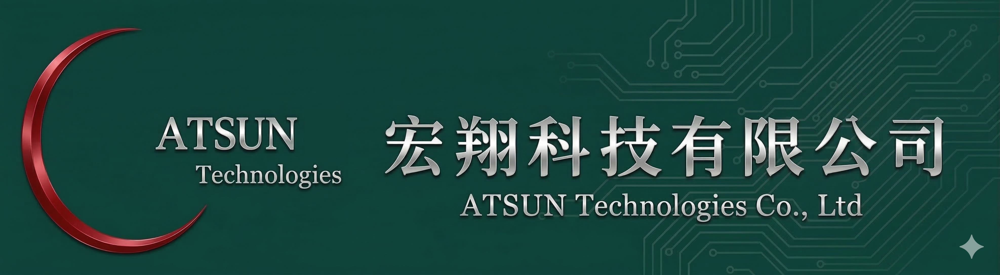

702028 臺南市新興路 533 巷 33 弄 16 號
No.16, Alley 33, Lane 533, Hsin-Hsing Rd, Tainan, Taiwan, R.O.C.
TEL: (06) 261-9821 | FAX: (06) 261-1528
業務連絡人：陳南宏先生 手機:0932-310-052
宏翔科技 Atsun Technology — 台南，自 1997
提供完整的 End-to-End 網路解決方案 — 從光纖施工、機房工程到19吋機櫃設備供應，是您值得信賴的技術夥伴。
立即與我們聯絡 →